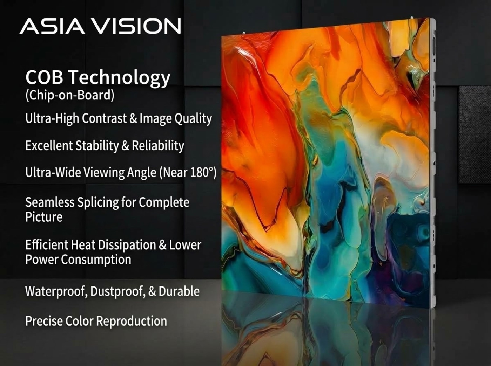

By David
When should an LED display module be replaced? An LED display module replacement is needed when a module develops faults that cannot be repaired in place, such as a cluster of dead pixels, a failed driver, or damage to the LED face. Done correctly, a module swap restores the screen quickly and invisibly. This 2026 guide explains when to replace a module, how to do it, and how to keep the replacement matching the wall.
A module is the building block of an LED screen, and it is designed to be replaceable. Most faults that owners face, from a dark patch to a cluster of dead pixels, are fixed by swapping a module rather than repairing it. The skill of doing this cleanly is what keeps a wall looking new for years, and it is a skill any owner can build with the right spares and a little practice.
This guide is written for owners and service teams who maintain LED displays. It covers how to decide when a swap is needed, the tools and steps involved, and the calibration that keeps the new module invisible against its neighbours.
Not every fault requires a replacement, and not every defect is worth fixing. A single dead pixel at the edge of a large wall is often left alone, while a cluster of failures in the viewing zone is replaced immediately. The decision follows the acceptance standard in the original specification.
| Fault | Replace? | Reason |
|---|---|---|
| Single dead pixel, edge | Often no | Not visible from the audience |
| Single dead pixel, centre | Sometimes | Visible in the viewing zone |
| Cluster of dead pixels | Yes | Usually a driver or module fault |
| Failed driver board | Yes | Whole module section affected |
| Physical damage to face | Yes | Cannot be repaired in place |
| Colour or brightness mismatch | Yes if uncalibratable | Visible patch on the wall |
Build the decision on the spec and the viewing zone, not on a single defect. A screen judged from a distance tolerates defects that a fine pitch control room cannot. Consistency in how the rule is applied keeps the wall looking uniform and avoids replacing modules that are still fine.
A module swap is a simple job with the right tools and a dangerous one without them. LED faces are fragile, and cabinets carry mains power. Prepare the tools, the replacement module, and the safety precautions before touching the screen.
The most important preparation is the replacement module itself. If it comes from a different batch, its color and brightness may not match, and the swap will leave a visible patch. Order spares with the original screen and store them properly so a swap is always a clean one.
The process is straightforward once the screen is safely powered down. Work carefully and keep the removed module on the soft mat face-up, so the LED face is never pressed against a hard surface. A module dropped face-down is a module destroyed.
Test with full white, red, green, and blue images to confirm the new module is fully working and matches its neighbours. Then step back to the viewing distance and check that the module is not visible as a patch. If it shows, the calibration step comes next.
A new module rarely matches an aged one perfectly on its own. The surrounding modules have dimmed with age, while the new module is at full brightness. Calibration brings the new module down to the level of its neighbours, or the whole wall back to a common standard, so the swap disappears.
How this is done depends on the control system. Some systems apply the stored calibration data from the replaced module; others require a fresh point-by-point calibration of the wall. Ask the supplier for the calibration method and keep the data with the screen so any future swap can match.
| Method | When Used | Result |
|---|---|---|
| Load stored module data | Calibrated walls with per-module data | Fast, near-perfect match |
| Point-by-point re-calibration | Walls without module data | Best match, takes longer |
| Manual brightness adjust | Quick fix, low-end systems | Approximate, may still show |
| No calibration | Uncalibrated walls | Visible patch likely |
If a replacement does not match perfectly, the skill of placing it matters. A module that is slightly bright is less visible at the edge of a wall than in the centre or at eye level. Technicians often keep the best-matching modules for the viewing zone and move less perfect ones to the edges of the wall.
This is why a wall benefits from a small pool of spare modules rather than a single one. If a swap leaves a slight mismatch, the technician can try a different spare and keep the best one in the most visible position. Over time, matching spares to positions keeps the wall looking its best.
Record every replacement with the date, the module position, and the reason. Then reorder the spare so the stock is ready for the next fault. A hot module that fails early, or a position that fails repeatedly, is a signal to investigate the cabinet rather than simply swapping again.
Treat the faulty module carefully on removal. If it is under warranty, it may need to be returned, so pack it in the antistatic bag and label it with its serial number and the fault. A well-documented return usually leads to a faster replacement from the supplier.
The first mistake is forcing a module or a connector, which damages the LED face or the board. The second is working without an ESD strap, which can kill pixels that fail days later. The third is dropping a module face-down on a hard surface. The fourth is forgetting to calibrate, which leaves a visible patch.
A fifth mistake is leaving the power on during the swap. Modules carry low voltage but the cabinet carries mains, and working on a live screen risks both the technician and the electronics. Isolate the cabinet and confirm it is dead before touching a module.
Owners who plan module replacements treat them as routine. They keep batch-matched spares on site, train a technician to do the swap, and hold the calibration data for the wall. When a fault appears, it is fixed in an hour rather than waiting weeks for parts and a service visit.
LED display module replacement is the most common maintenance task an owner will face. With the right spare, the right tools, and a calibration method, any fault becomes a quick, invisible fix. That capability is what keeps a screen looking new for its whole working life.
Keep the spare modules stored with the screen's other service parts and refresh the stock after each use. A wall with trained staff, matched spares, and calibration data on hand treats every module fault as a routine chore rather than an emergency that waits on a shipment. That is the difference between a screen that is always ready and one that spends weeks dark.

For this requirement our range covers it directly: the X Series (front/rear service, common parts across platforms) and the series overview for spare-part lists.
Order batch-matched spare modules and get the calibration data and release tools with your screen.
Request Module SparesChat on WhatsApp